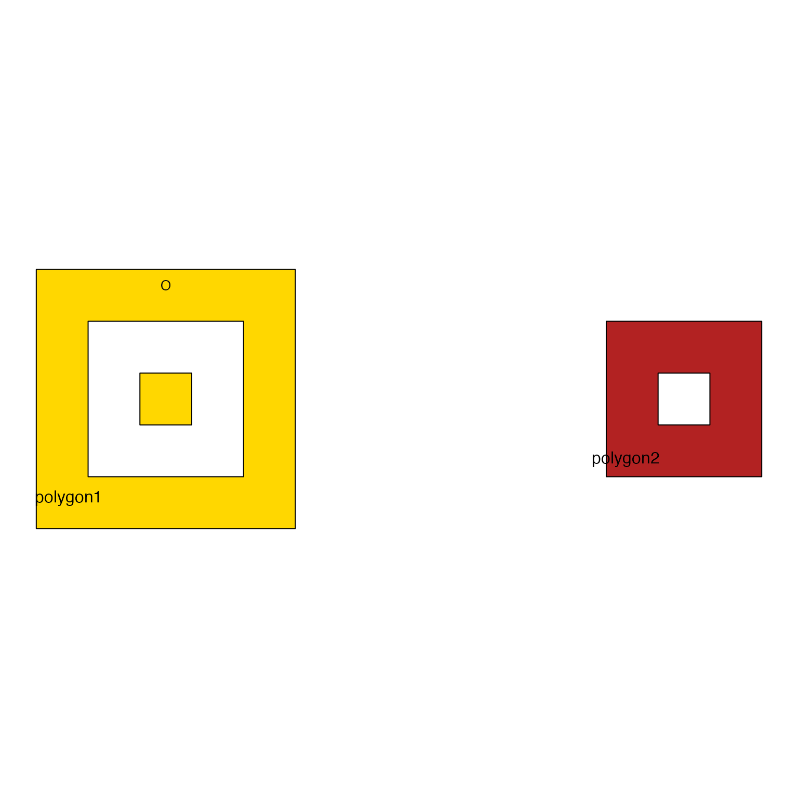
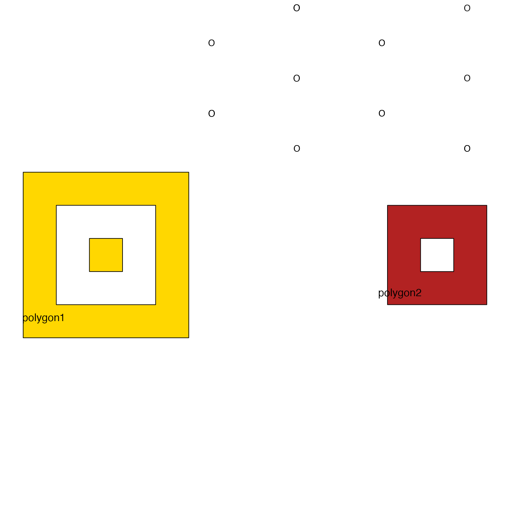
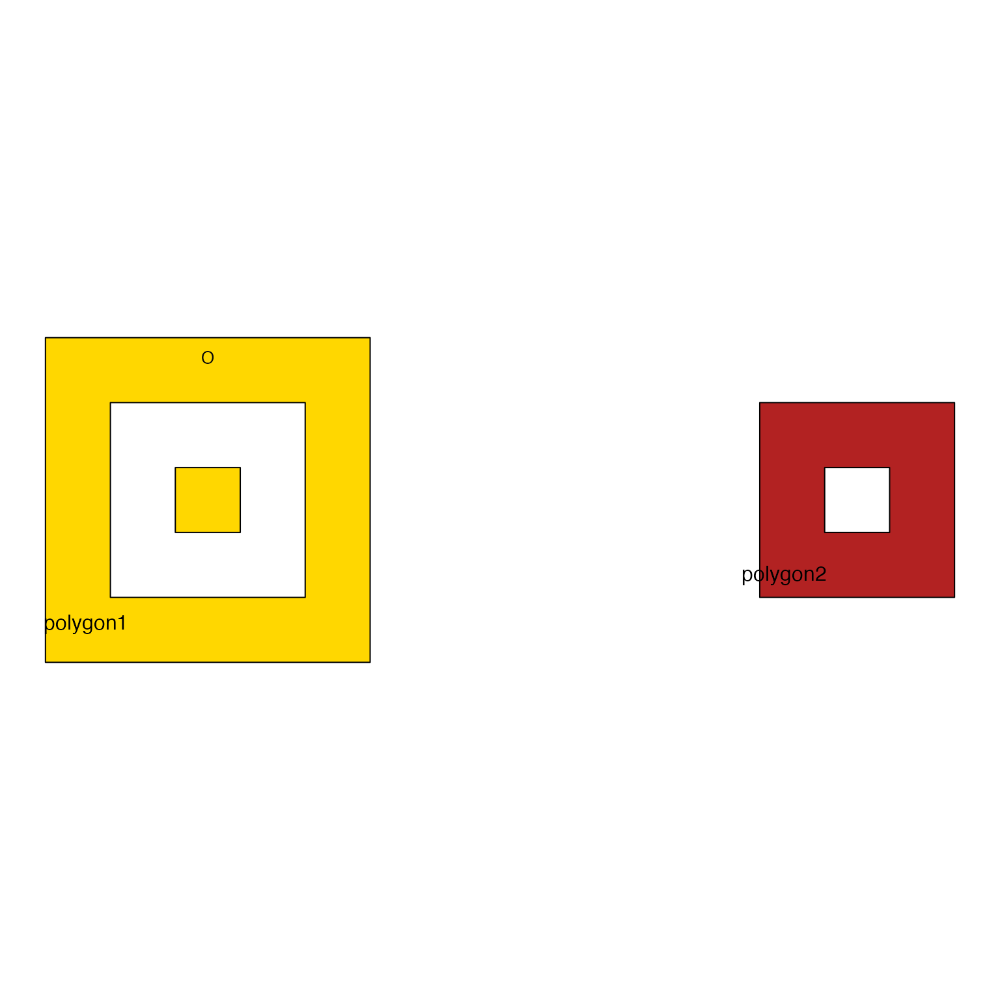
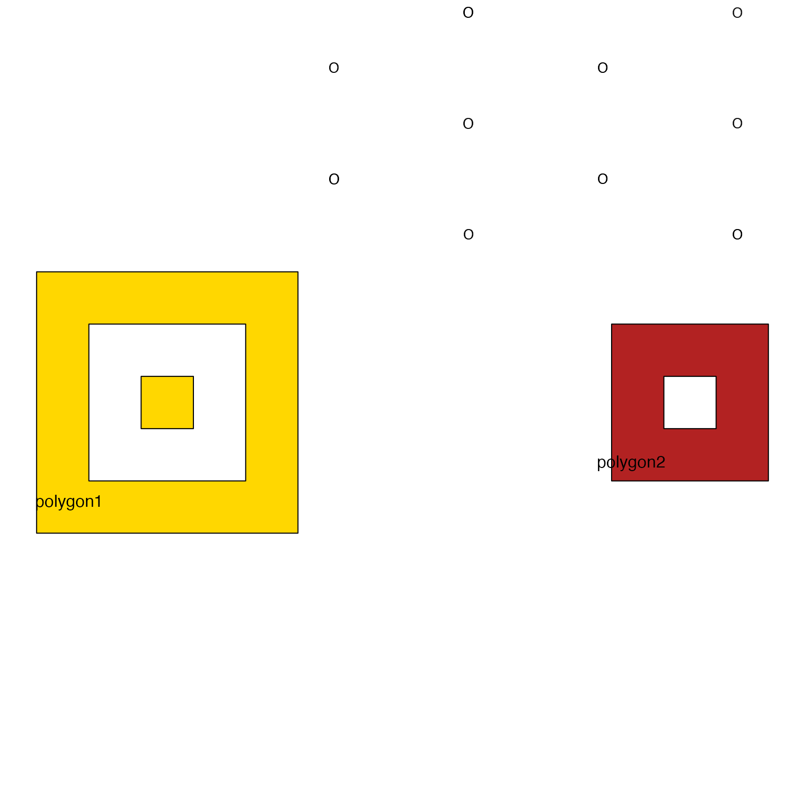

Arrange one or more text labels to fit inside a polygon.
Usage
label_fill_JamPolygon(
jp,
labels,
buffer = -0.15,
width_buffer = 0.1,
relative = TRUE,
color = "black",
border = NA,
ref_jp = NULL,
xyratio = 1.1,
fontsize = 10,
cex = 1,
degrees = 0,
jitter_cex = 0.04,
jitter_color = 0.07,
jitter_degrees = 0,
apply_n_scale = TRUE,
label_method = c("offset", "columns"),
draw_labels = TRUE,
seed = 1,
plot_style = c("none", "JamPolygon"),
verbose = FALSE,
...
)Arguments
- jp
JamPolygonwhere only the first row is processed.- labels
charactervector of labels- buffer
numericvalue (default-0.15) buffer to resize the polygon, where negative values shrink the polygon size relative to the size of the polygon. For example-0.9will reduce the polygon 90% of the way toward a completely empty polygon, where that range is defined by the width inside the polygon border.- width_buffer
numericpassed tosample_JamPolygon()to apply a "width buffer", using values relative to the maximumbuffersize. This mechanism is experimental, to try to improve label placement in unusually-shaped polygons.width_buffer=0will add no additional bufferwidth_buffer=0.5will apply width buffer equal to half the buffer size required to create an empty polygon. The polygon is shifted left and right by half this amount each direction, then the intersection is used. This method has the intention of requiring a certain available width, for example for wide text labels.
- relative
logicalpassed tobuffer_JamPolygon()(defaultTRUE) to definebufferwith relative coordinates.- color
characterstring to define the color of resulting labels.- border
characterstring used to define an optional item border, which is only useful whengridtextis used to visualize labels.- ref_jp
JamPolygon(optional) used only whenapply_n_scale=TRUE, used to define the overall plot range before determining whether the internal area ofjpshould be reduced before arraying item label coordinates. The general idea is that polygons which are a smaller percentage of the total area should not be reduced as much byapply_n_scalebecause they have limited area, but larger polygons should receive closer to the fullapply_n_scaleadjustment.- xyratio
numericvalue indicating the relative ratio of x (width) to y (height) when arraying coordinates inside the polygons. Values larger than1will place points wider from each other than they are tall, which can help with longer text labels.- fontsize
numericfont size in points, default10.- cex
numericmultiplied byfontsizeas an alternative convenient way to adjust text label sizes.- degrees
numericvalue used to rotate labels, default0, in degrees between 0 and 359.- apply_n_scale
logicalindicating whether to adjust the buffer based upon the number of items, where more items uses less buffer, and fewer items imposes a larger buffer. The intent is for a single label or small number of labels to appear near the center.- label_method
characterstring (default "hexagonal") to define the label layout. Passed aspatterntosample_JamPolygon()."offset"implements close to hexagonal/triangular arrangement, with adjustable xy ratio via argumentxyratio. Every other point is "offset" upward by half the row height."columns"implements effectively the same approach with no y-offset, so that items are always in proper rectangular grid format. Preferred for column-organization, and typically works best with largerxyratiovalues.
- draw_labels
logical(defaultTRUE) indicating whether to draw labels, however it is only used whenplot_style="JamPolygon". Note also, when drawing labels, it assumes the plot is already created usingref_jp, and it determines the coordinate adjustments relative toref_jp.- seed
numericvalue (default1) used to define the random seed withset.seed(seed)for reproducible output. WhenseedisNULLthere is no call toset.seed().- plot_style
characterstring, default "none"."none": No plot output."JamPolygon": assumeref_jphas already been plotted, and labels should be drawn in that coordinate context. For example callplot(ref_jp)thenlabel_fill_JamPolygon(jp, ref_jp, plot_output="JamPolygon"). See examples.
- verbose
logicalindicating whether to print verbose output.- ...
additional arguments are passed to internal functions:
buffer_JamPolygon(), andsample_JamPolygon().- `jitter_cex, jitter_color, jitter_degrees`
values used to provide some variability to the repeated pattern of text labels.
jitter_cexprovides a range to adjustcexandfontsizeslightly for each label, making some slightly larger or smaller to help distinguish adjacent labels from one another.jitter_colorprovides a range for adjusting the font color, which is applied withdarkFactorinjamba::makeColorDarker().jitter_degreesprovides a range for adjusting fontdegrees, the default0means the values are not adjusted. Thetext()function does not permit multiple vectorized rotations, howevergridtextdoes permit multiple angles. Best to usejitter_degreesonly when displaying labels withgridtext.
Value
list when there are valid coordinates, NULL otherwise.
The list contains these elements:
"items_df": adata.framewith columnsx,y,text,rot,color,fontsize,border"g_labels": a gridgrobgraphical object only whenplot_style="base", otherwiseNULL"scale_width": anumericvalue indicating thebufferused"jp_buffer": aJamPolygonobject after adjusting withbuffer
Details
This function is intended to define points inside a polygon area so that text labels can be roughly evenly spaced, with relatively good default positioning to minimize overlapping labels. This function does not prevent overlapping labels, nor does it fully prevent labels overlapping the polygon border.
There are options to help minimize overlapping labels, such as xyratio
which defines the default width-to-height ratio of resulting points.
For wider text labels, a higher value for xyratio may be helpful.
To minimize adjacent (side-by-side) label overlaps, it can be helpful
to use degrees to rotate labels slightly, for example degrees=5
may be enough to prevent wide labels from overlapping the next label
beside it.
Strategy
Determine bounding box with rectangular area that encompases the polygon.
Define evenly spaced points across the rectangular area sufficient to produce at least
ntotal points.Retain only the subset of points which are inside the polygon.
If there are fewer than
nremaining points, repeat the process using a higher target value forn.
Todo
Modify options that plot the result so they work together with
plot.JamPolygon().
See also
Other JamPolygon:
JamPolygon-class,
[,JamPolygon,ANY,ANY,ANY-method,
add_orientation_JamPolygon(),
area_JamPolygon(),
bbox_JamPolygon(),
buffer_JamPolygon(),
check_JamPolygon(),
check_Venndir(),
eulerr_to_JamPolygon(),
farthest_point_JamPolygon(),
find_venn_overlaps_JamPolygon(),
has_point_in_JamPolygon(),
intersect_JamPolygon(),
label_outside_JamPolygon(),
label_segment_JamPolygon(),
labelr_JamPolygon(),
minus_JamPolygon(),
nearest_point_JamPolygon(),
nudge_JamPolygon(),
plot.JamPolygon(),
point_in_JamPolygon(),
polyclip_to_JamPolygon(),
polygon_circles(),
polygon_ellipses(),
sample_JamPolygon(),
split_JamPolygon(),
union_JamPolygon(),
update_JamPolygon()
Examples
df3 <- data.frame(name=c("polygon1", "polygon2"),
label=c("polygon1", "polygon2"),
x=I(list(
list(c(1, 6, 6, 1),
c(2, 5, 5, 2),
c(3, 4, 4, 3)),
list(#c(11, 16, 16, 11),
c(12, 15, 15, 12),
c(13, 14, 14, 13))
)),
y=I(list(
list(c(1, 1, 6, 6),
c(2, 2, 5, 5),
c(3, 3, 4, 4)),
list(#c(1, 1, 6, 6),
c(2, 2, 5, 5),
c(3, 3, 4, 4))
)),
fill=c("gold", "firebrick"))
jp3 <- new("JamPolygon", polygons=df3);
# each polygon is filled individually
jp3p <- plot(jp3);
lfj1 <- label_fill_JamPolygon(jp3[1,], labels=rep("O", 100),
ref_jp=jp3, plot_style="JamPolygon", color="darkorange3")
# sometimes manual adjustment of xyratio can find the right fit
lfj2 <- label_fill_JamPolygon(jp3[2,], labels=rep("X", 40),
color="gold",
buffer=-0.5,
label_method="columns", xyratio=0.7,
ref_jp=jp3, plot_style="JamPolygon")
 jp3p <- plot(jp3);
lfj12 <- label_fill_JamPolygon(jp3, labels=rep("X", 80),
buffer=-0.5,
label_method="offset", xyratio=2,
ref_jp=jp3, plot_style="JamPolygon")

jp3p <- plot(jp3);
lfj1 <- label_fill_JamPolygon(jp3[1,], labels=rep("O", 87),
apply_n_scale=FALSE,
spread=TRUE,
ref_jp=jp3, plot_style="JamPolygon")

jp3p <- plot(jp3, label="");
lfj1 <- label_fill_JamPolygon(jp3[1,],
labels=c("One\nlabel", "Another label", "Yet \nanother label"),
apply_n_scale=FALSE,
spread=TRUE,
ref_jp=jp3, plot_style="JamPolygon")
jp3p <- plot(jp3);
lfj12 <- label_fill_JamPolygon(jp3, labels=rep("X", 80),
buffer=-0.5,
label_method="offset", xyratio=2,
ref_jp=jp3, plot_style="JamPolygon")

jp3p <- plot(jp3);
lfj1 <- label_fill_JamPolygon(jp3[1,], labels=rep("O", 87),
apply_n_scale=FALSE,
spread=TRUE,
ref_jp=jp3, plot_style="JamPolygon")

jp3p <- plot(jp3, label="");
lfj1 <- label_fill_JamPolygon(jp3[1,],
labels=c("One\nlabel", "Another label", "Yet \nanother label"),
apply_n_scale=FALSE,
spread=TRUE,
ref_jp=jp3, plot_style="JamPolygon")